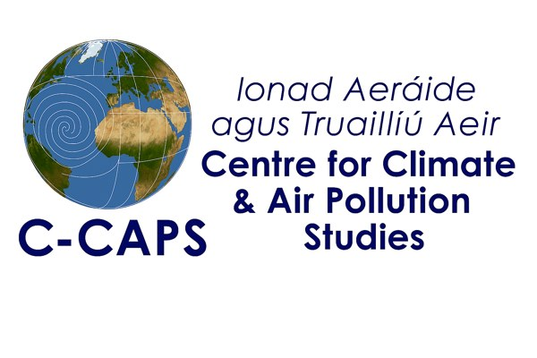

Observation systems
Develop observation systems for N₂O that complement existing atmospheric observation systems, centred on establishing monitoring capacity.
C-CAPS · University of Galway · Funded by EPA Ireland
EmissioN verifiCation fOr nitRous oxidE
Developing a nitrous oxide (N₂O) emissions verification system for Ireland.
Overview
“Emission verification for nitrous oxide” is a project of C-CAPS at the University of Galway, funded by the Environmental Protection Agency (EPA) Ireland. The main objective of this project is to develop a N₂O emissions verification system for Ireland.
The Centre for Climate and Air Pollution Studies (C-CAPS) is dedicated to investigating changes in atmospheric composition and their implications for pollution, with consequences ranging from local to global scales. These changes impact both human health and the environment. C-CAPS envisions developing advanced observational and forecasting capabilities to comprehensively understand atmospheric composition, encompassing processes at the nanoscale as well as their global effects.
Why nitrous oxide?
Nitrous oxide (N₂O) is a potent greenhouse gas, about 300 times as potent as CO₂, and remains in the atmosphere for a long time, with an atmospheric lifetime of 114 years. Despite making up around 6% of global greenhouse gas emissions, mainly from agriculture, N₂O is often overlooked in climate policy.
Emissions have risen 30% over the past four decades, driven largely by synthetic fertiliser use. In Ireland, agriculture accounts for 93% of N₂O emissions, with recent increases linked to dairy expansion. Monitoring N₂O is crucial to address climate change effectively and ensure informed mitigation strategies.
Objectives
Develop observation systems for N₂O that complement existing atmospheric observation systems, centred on establishing monitoring capacity.
Implement, develop and optimise an inverse modelling system (FLEXINVERT) for N₂O emissions in the Irish domain.
Independently verify emissions and sinks of N₂O in Ireland, based on data from key boundary sites, to produce annual estimates.
Provisionally assess the relative contributions from individual sources using modelling and observational data analysis techniques.
The site
Mace Head Atmospheric Research Station is a core facility within the University of Galway's Ryan Institute research centre.
Mace Head is the only GAW station in the eastern Atlantic region and is the globally acknowledged clean background western European monitoring station.
2008 marked the 50th anniversary of the first aerosol measurement programme conducted at Mace Head in 1958.
Visit macehead.orgPeople
Principal Investigator
University of Galway
Principal Investigator
University of Galway
Postdoctoral Researcher
University of Galway
Postdoctoral Researcher
University of Galway

ENCORE is part of the Centre for Climate and Air Pollution Studies (C-CAPS), Ryan Institute, University of Galway, and is funded by the Environmental Protection Agency (EPA) Ireland.